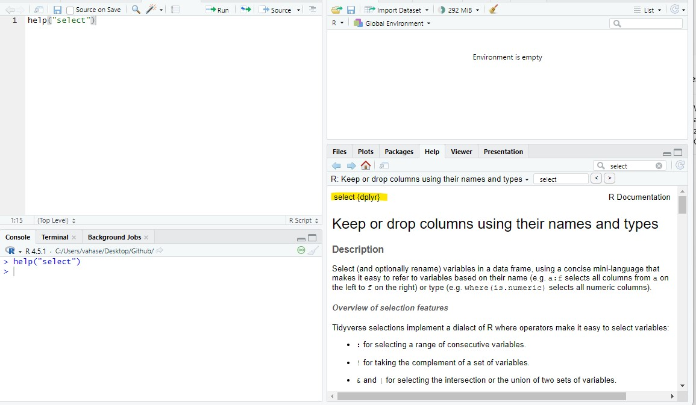
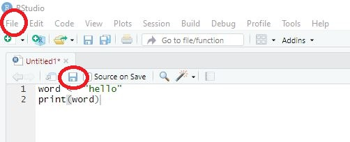
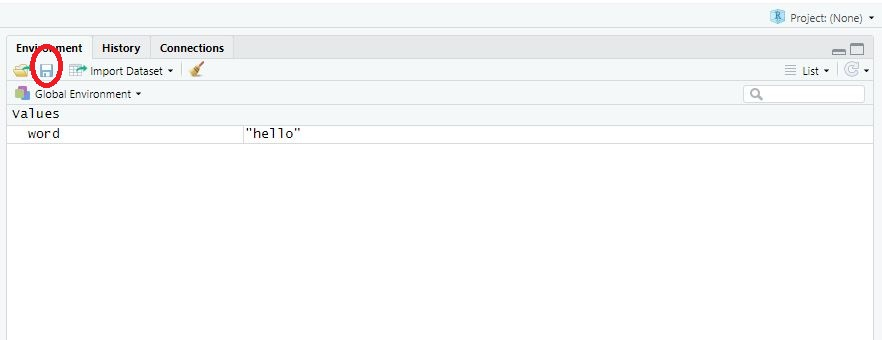

word <- "hello"3 Workflow in R
🎯 Learning goals
After working through Tutorial 3, you’ll be able to…
- describe the basic workflow in RStudio (script → objects → functions → output)
- explain what objects and functions are and use them in simple examples
- explain what packages are and apply them by installing, loading, and using a package
- apply these skills to create a simple R analysis for your own dataset
1. Basic workflow in R
The basic workflow in R looks like this:
🖥️ Setup
📦 Packages
🔎 Analysis
💾 Saving everything
Check your set-up. Are you ready to go?
2. Object- and function-oriented programming
Before we start working with data, it is important to understand a core idea behind R:
R is an object- and function-oriented programming language.
Chambers (2014, p. 4) summarizes this idea nicely:
- Everything that exists is an object.
- Everything that happens is a function call.
These two principles explain most of what you will do in R.
2.1 Objects: storing information
In R, we store information inside objects so that we can work with it later.
An object can contain, for example:
- a number
- a word or text
- multiple values
- a dataset
- results from an analysis
We create objects by assigning a value to a name using the assignment operator <-.
This command creates an object called word and stores the text "hello" inside it.
2.2 Functions: doing something with objects
The second key idea is that almost everything in R happens through functions.
A function:
- takes an input,
- performs an operation,
- returns an output.
General structure:
function_name(input)For example, functions can:
- calculate,
- transform data,
- create plots.
Even assigning values with <- can be understood as part of R’s functional logic. Learning R therefore largely means learning which functions to use and how to combine them.
Smart Hack: Argument order and optional arguments
Functions in R use inputs called arguments (e.g., the variable you want to “give” a function for transformation or analysis).
Argument order
Many functions expect arguments in a specific order. If you provide arguments without naming them, R assumes you are following this predefined order.
General structure:
function_name(argument1, argument2, argument3)For example, the function round() rounds numbers:
round(3.1413, 2)[1] 3.14The first argument is the number to round; the second argument specifies the number of digits.
If you change the order without naming arguments, the result may be wrong or produce an error. A safer and clearer approach is to name arguments explicitly:
round(x = 3.1413, digits = 2)[1] 3.14Optional arguments
Many functions also contain optional arguments. These arguments already have default values, meaning you only need to specify them if you want to change the default behavior.
For example, this works exactly the same as the code above:
round(3.1413)By default, round() uses digits = 0, so the result is rounded to a whole number. If you want a different behavior, you provide the optional argument:
round(3.1413, 3)2.3 Take-Away and Example
To recap:
- data and results are stored as objects
- all operations are performed using functions
- analysis consists of applying functions to objects step by step
Fortunately, R already provides many predefined functions, so you usually use existing functions rather than writing your own from scratch.
Let’s take an example: Suppose we want to add more text to our object word. We can use the function paste0(), which combines pieces of text.
word <- paste0(word, " and good morning")
word[1] "hello and good morning"What happens here?
- R takes the existing object word as input.
- The function
paste0()combines it with new text. - The result replaces the old object word.
This process — applying functions to objects and saving the result — is the basic workflow of programming in R.
3. Packages
R already comes with many built-in functions (called Base R).
However, for many tasks — such as data visualization, web scraping, or advanced data management — we need additional tools.
👉 Packages are collections of functions, data, and documentation that extend the functionality of Base R.
You can think of packages as toolboxes: each package provides tools designed for a specific purpose.
In the spirit of open science, anyone can develop and publish R packages, and the source code is openly available. This allows researchers and developers worldwide to share methods and improve existing tools.
A complete list of available R packages can be found on CRAN (the Comprehensive R Archive Network).
In this seminar, we’ll for instance use packages like tidyverse, which provides tools for data import, cleaning, transformation, and visualization.
3.1 Install packages
Before you can use a package, you must install it on your computer. Installation downloads the package from CRAN and saves it locally.
For example, to install the tidyverse package, run:
install.packages("tidyverse")You only need to install a package once per computer (unless you reinstall R or update packages).
3.2 Load packages
After installation, you must load the package in every new R session before using its functions. This is done with the library() function:
👉 Important distinction
-
install.packages()→ done once -
library()→ done every time you start R
Smart Hack: Using
:: to call functions
Once a package is loaded, its functions can be used directly. Alternatively, you can call a specific function without loading the entire package using the :: operator. For example, you may want to use a single function from a package without loading the whole package with library().
Here, we use the select() function from the dplyr() package even without loading the package first.
`dplyr::select()`This approach is useful when you only need one function or multiple packages contain functions with the same name.
3.3 Getting help and information about packages
After installing and loading a package, you may want to learn what it can do.
Packages usually include:
- Help files for individual functions
- a reference manual (list of all functions)
- vignettes (long-form tutorials written by the package authors)
Helpful commands in R:
-
help(package = "tidyverse")— overview of a package
-
?select— help page for a function
You can also visit the package’s CRAN page (e.g., search CRAN tidyverse in Google). There you will find descriptions, documentation, and tutorials explaining how the package is used.
4. How to (not) ask for help (featuring ChatGPT)
One thing you can count on in this seminar: many things won’t work right away.
You will forget commands, mix up function names, use the wrong object type, misspell package names, or run into error messages you don’t understand. This happens to everyone — from beginners to people who have used R for years.
If you did not understand something in a tutorial or just want me to repeat something: Please do ask! The most important thing when learning R is to understand that it is completely normal to feel lost sometimes. Don’t worry - it’s highly likely that everyone else feels the same.
When something breaks and I am not around to help:
- Check your code and object names carefully.
- Read the error message.
- R’s built-in help system (
helpand?) - Search online with good keywords
- Ask for help in a reproducible way (code + error + context), for example in our GitHub discussion forum
4.1 Use R’s built-in help system
If you want information about a package, use help() or ?. These commands open documentation in the Help pane in RStudio.
help(package = "quanteda") # Version 1 of asking for help
?quanteda # Version 2 of asking for helpSimilarly, you can check for help for a specific function. Let’s assume I am not sure what the select() function does in R. I could check this out in R Studio:

4.2 Read error messages (look scary but are helpful!)
Error messages often look annoying, but they usually contain useful clues:
- which function failed
- where it failed
- what R expected vs. what it got
A good habit is to:
- read the full message
- identify the function name mentioned
- copy the message when asking for help
4.3 Search for help online (smart Googling)
For some questions, using the help() function won’t cut it. In this case, Google is your new best friend.
Good sources for R help:
- Stack Overflow
- StackExchange
- RSeek
- ChatGPT
⚠️ Critical: Do NOT use ChatGPT before Session 4
Do not use ChatGPT before Session 4.
If you rely on ChatGPT while you are still learning the basics, you will not build the foundational skills you need — and I can be very direct about the consequence: you will fail the exam.
ChatGPT is not allowed in the exam. The exam requires that you can write and debug basic R code on your own. If you skip that learning phase now, you will be lost later and you will not be able to keep up with the course.
Until Session 4, you must learn by:
- working through the tutorial material step by step,
- using the built-in help system (help, ?),
- reading error messages carefully,
- asking me or your peers when you’re stuck.
Use good search terms
Include at least:
- the function name
- the exact (or partial) error message
- the term “R” (so results are for the right programming language)
Don’t trust every result you get
While most Google searches will get you a multitude of different answers for your questions, not all of them are necessarily right for your specific problem. Often, there are different solutions for the same problem - so don’t be confused when people are proposing different approaches. Its often best to scroll through some search results and then try the solution that seems most understandable and/or suitable for you.
Make your problem reproducible If you ask others for help (online, classmates, instructor, or ChatGPT), they need to be able to reproduce the problem.
This i a bad help request: “If I try to set my working directory, I get an error. What is the problem?”
A good help request includes:
- the exact code you ran
- the exact error message
- your operating system (Windows/Mac/Linux)
- ideally your session information, with
sessionInfo()
Example of a good help request: “I am using Windows. I ran this code: setwd(C:). R returns: Error: unexpected input in setwd(C:. What am I doing wrong?”
5. Save code & results
Imagine that you have done your analysis. Now, we want to save our results!
5.1 Save your code
One of the biggest advantages of working in R is reproducibility: if you save your code, you (and others) can rerun it later and reproduce the same results.
That only works if you actually save your scripts.
To save code, you have two options. Remember to save your scripts in the folder scripts:
Use the menu option File → Save As …
Important: scripts should be saved with the file ending .RClick the Save button in the Source pane and save your script, for example as MyCode.R

5.2 Save your results
You have successfully executed all commands and now want R to save your results/working environment? Saving your results is especially useful if it takes some time to have R run through the code and reproduce results - in this case, you only need to save results once and can then load them for the next session.
Again, there are several options for saving your results. Remember to save them in the folder output/results:
- Use the
save.image()-command:
save.image("output/results/tutorial3.RDATA")- Use the save-button in the environment window and save your results in the correct format, for instance as MyData.RDATA”.

💡 Take-Aways
-
Packages: Collections of topic-specific functions that extend the functions implemented in base R. You only need to install them once on your computer - but you have to load packages at the beginning of each session. Otherwise, R will not be able to find related functions. Commands:
install.packages(),library() -
Help: The thing everyone working with R needs. It’s normal to run into errors when working with R - don’t get frustrated too easily. Commands:
?,help() -
Save code & results: You should save your code/results from time to time to be able to replicate analyses. Commands:
save.image
🎲 Quiz
📚 More tutorials on this
You still have questions? The following tutorials & papers can help you with that: